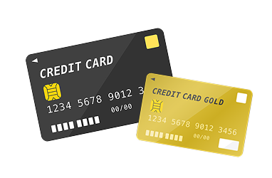

学生・20代向け
「急な出費があるけれど、貯金が足りない…」
そんな学生や20代の方でも利用しやすいカードローンがあります。
アルバイト収入があれば申し込み可能なものも多く、少額から借りられるため、
学費や生活費の不足を一時的に補うことができます。
特に、初めてお金を借りる方は、金利が低めで返済しやすいものを選ぶのがポイント。
アルバイト収入でも借りられる？
「アルバイトだからお金を借りるのは難しいのでは？」と心配している方もいると思います。
ですが、カードローンの審査で最も重視されるのは
「毎月安定した収入があるかどうか」です。
たとえ正社員でなくても、継続的に収入を得ていれば、審査に通る可能性は十分にあります。
アルバイトでもカードローンは利用可能！
カードローンの審査では「安定した収入があるか」が重要なポイント。
毎月しっかりと収入があれば、
アルバイトやパートの方でも申し込めるカードローンはたくさんあります。

長く働いていると有利！
審査では「どれくらい同じ仕事を続けているか」も大切な判断材料になります。
半年以上同じ職場で働いていると、収入が安定しているとみなされ、
審査に通りやすくなる傾向があります。
逆に、仕事を変えたばかりのタイミングだと審査が厳しくなることもあるので、
「申し込み時期」も意識しましょう。
希望額を低めに設定しよう
借入希望額が高すぎると審査に落ちやすくなります。
まずは10万円～30万円程度の少額から申し込むのがコツ。
利用実績を積むことで、
将来的に限度額を増やせる可能性もあります。
初めてでも安心なカードローンは？
最近のカードローンは、初めての方向けに少額から借りられるようになっていたり、
無利息期間があるものもあります。
申し込みも スマホで簡単 にできるので、難しい手続きもありません。
初めての方でも安心して使えるカードローンのポイント
少額から借りられる
初めての方は、まずは10万円～30万円くらいから始めるのが安心。
初回30日間無利息のサービスがある
無利息期間付きのサービスも活用しましょう。
スマホやPCで申し込みOK
いつでもどこでも申し込みができて便利。
コンビニATMで返済できる
提携ATMで手軽に返済できるため、計画的に使えます。
無理なく借りて、計画的に返済しよう！
初めての借入では「いくら借りられるか」より「無理なく返せるか」が大切。
毎月の返済額をシミュレーションして無理のない金額で申し込みましょう。
わからないことがあれば、カードローン会社の相談窓口を利用するのもおすすめです。
急な出費でも安心なカードローンは？
「お金が足りない…！」そんな時に便利
友人との急な飲み会、家電の故障、予想外の出費…
「今すぐお金が必要！」
という場面は、学生や20代の方にもよくあること。
そんなときに頼れるのが、すぐに借りられるカードローンです。
無利息期間があるものや、最短即日で融資が受けられるものを選べば、
余計な負担を減らしながら利用できます。
無理なく使って、賢く返済！
急な出費に対応できるのは便利ですが、借りすぎには注意が必要。
まずは「本当に必要な金額だけを借りる」ことが大切です。
無利息期間を上手に活用し、計画的に返済すれば、余計な負担を減らせます。
まとめ
アルバイト収入でも、初めての利用でも、急な出費があっても、
カードローンを上手に活用すれば安心です。
少額から借りられるものや、無利息期間のあるカードローンを選ぶことで、
負担を抑えながら利用できます。
大切なのは、必要な分だけ借りて、計画的に返済すること。
事前に金利や返済シミュレーションを確認し、自分に合ったカードローンを選びましょう。
賢く活用すれば、いざという時の心強い味方になります！
sakunavi © copyright
>